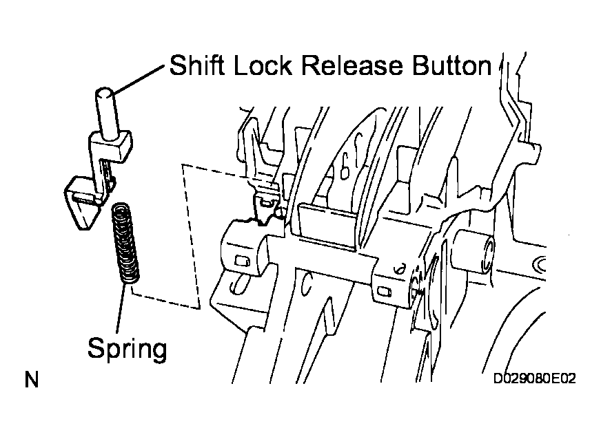
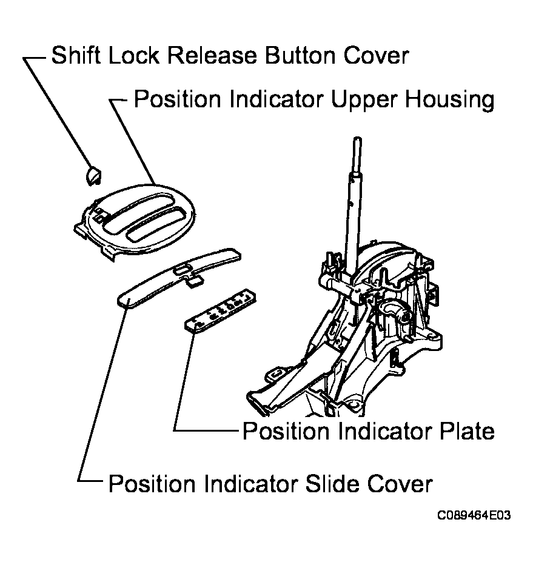

Floor Shift Assembly: Reassembly
WARNING: This page is about a different variant/trim than selected.
- INSTALL SHIFT LOCK RELEASE BUTTON
- Apply MP grease on the shift lock release button and spring.
- Install the shift lock release button and spring to the floor shift.

Courtesy of © TOYOTA, LICENSE AGREEMENT TMS1002HINT:
Ensure that the claws fit tightly.
- INSTALL INDICATOR LIGHT WIRE SUB-ASSEMBLY
- Install the indicator light wire to the floor shift assembly.
- INSTALL SHIFT LOCK SOLENOID
- Install the shift lock solenoid to the floor shift.
- INSTALL SHIFT LOCK CONTROL SWITCH
- Install the shift lock control switch to the floor shift with the screw.
Torque: 2.2 N*m (22 kgf*cm, 19 in.*lbf)
- Install the shift lock control switch to the floor shift with the screw.
- INSTALL POSITION INDICATOR UPPER HOUSING
- Install the position indicator plate on the position indicator upper housing.
- Install the position indicator slide cover on the shift lever plate.
- Install the position indicator upper housing on the shift lever.
- Install the shift lock release button cover on the position indicator upper housing.
- INSTALL SHIFT LEVER KNOB SUB-ASSEMBLY
- Apply MP grease to the shift lever knob button and spring.
- Install the shift lever knob button and spring to the shift lever knob.
- Install the transmission control switch to the shift lever knob.NOTE: Ensure that the claws fit tightly.
- Install the shift lever knob cover to the shift lever knob with the 2 screws.
HINT:
Coat the threads of the screws with sealant.
Sealant: Part No. 08833-00080, THREE BOND 1344, LOCTITE 242 or equivalent
NOTE: Be careful that the transmission control switch wire harness is not caught between the shift lever knob cover and shift lever knob.
Courtesy of © TOYOTA, LICENSE AGREEMENT TMS1002
- INSTALL TRANSMISSION CONTROL SWITCH
- Install the 2 terminals into the indicator light wire connector.
- Clamp the wire harness onto the shift lever plate. Then connect the connector to the shift lever plate.